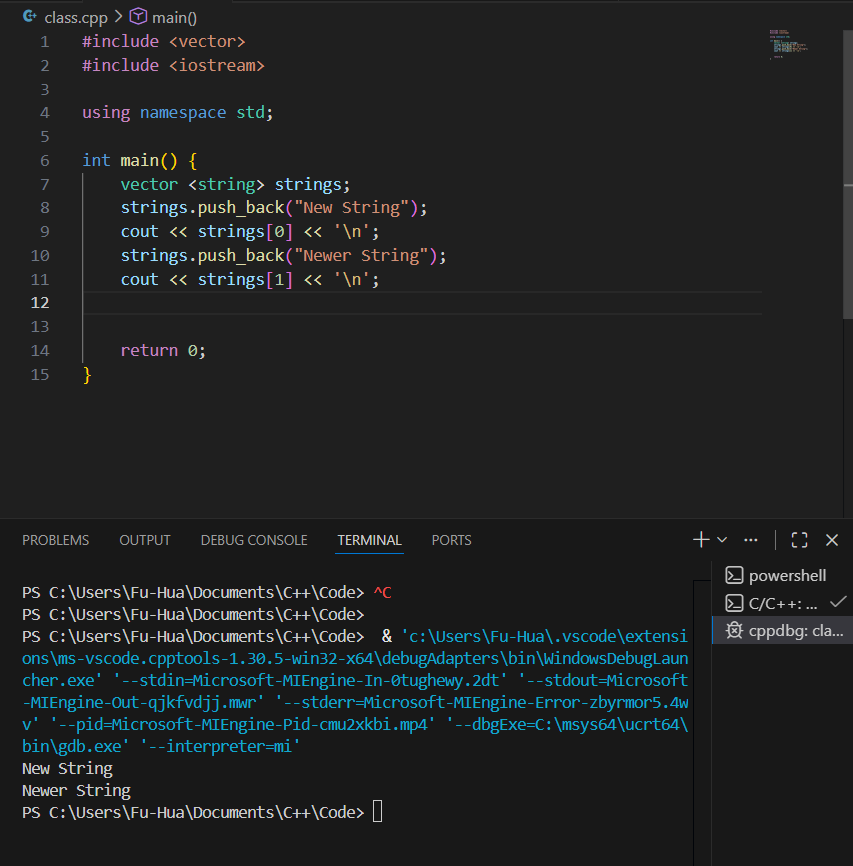
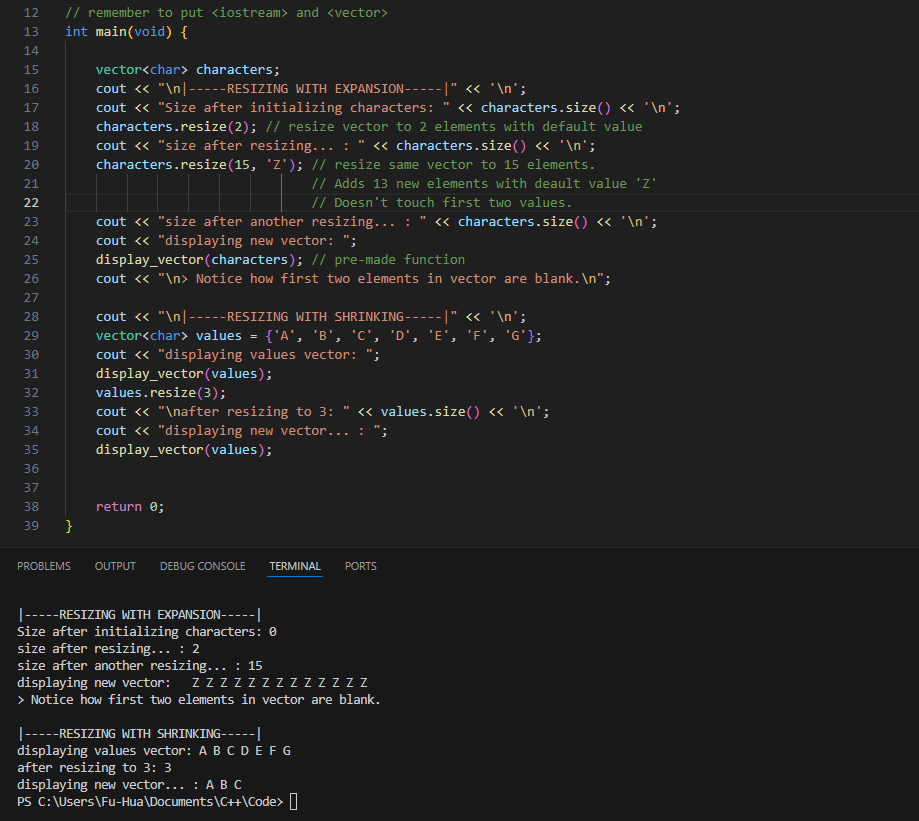
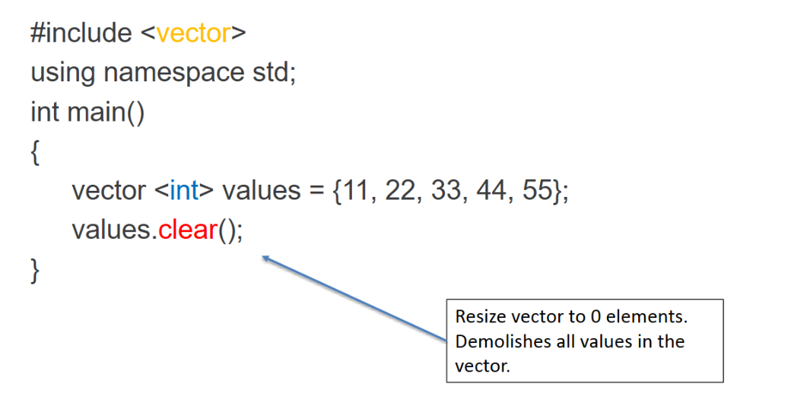
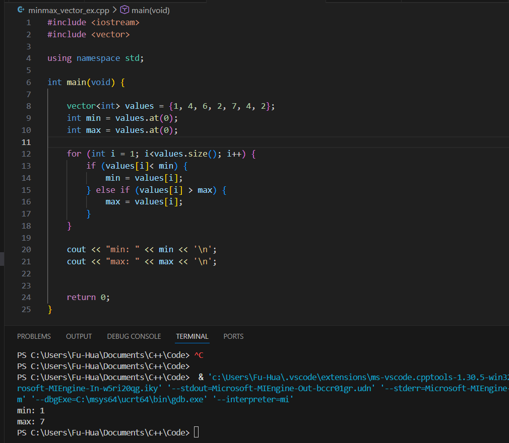
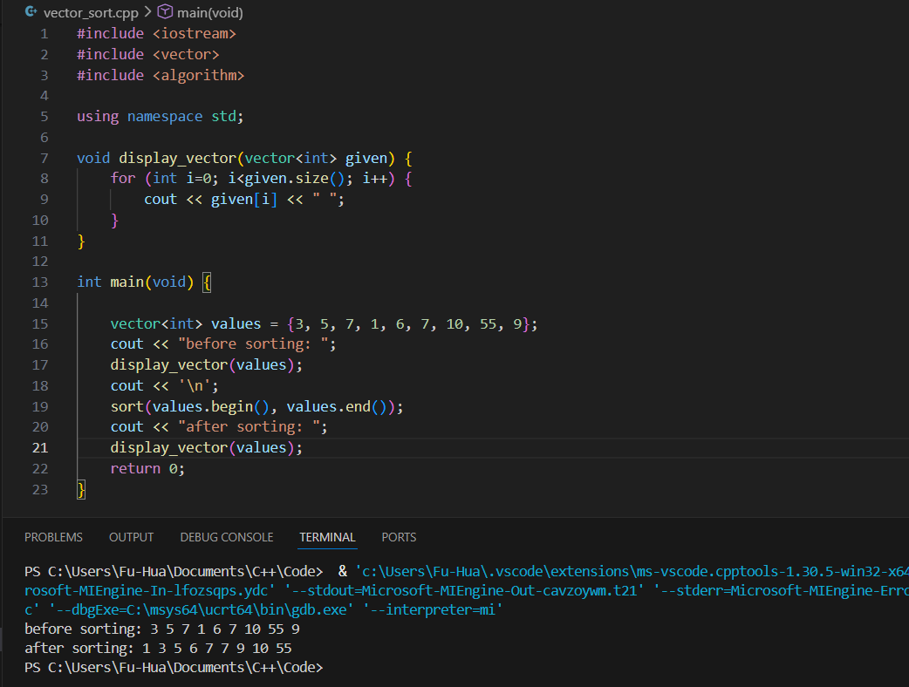
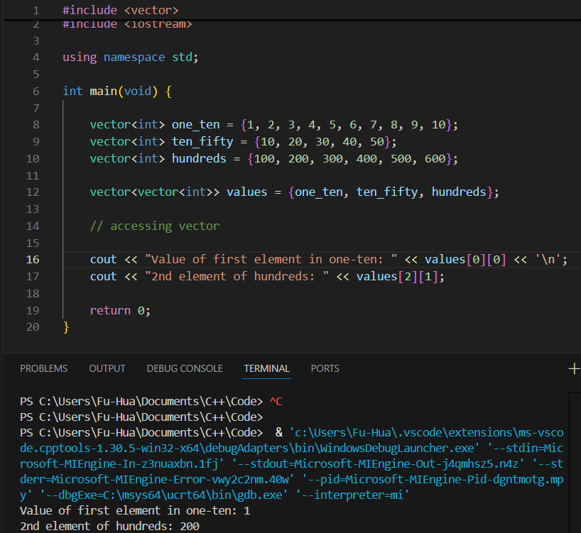

Declaring
- Vectors can be declared as either
- Default size
- Initial size
- Initial size and initial value
- Initial values, determined size
- vector <DATATYPE> name;
| Feature / Operation | C++ std::vector |
Java Vector |
Notes / Differences |
|---|---|---|---|
| Type / Template | std::vector<T> (template) |
Vector<T> (class with generics) |
C++ uses templates, Java uses generics |
| Dynamic resizing | Yes | Yes | Both grow automatically |
| Add element | v.push_back(x) |
v.add(x) |
Method names differ |
| Remove last element | v.pop_back() |
v.remove(v.size()-1) |
C++ has direct pop_back() |
| Access element by index | v[i] or v.at(i) |
v.get(i) |
C++ allows [], Java requires get() |
| Set element by index | v[i] = value |
v.set(i, value) |
Method names differ |
| Size | v.size() |
v.size() |
Same |
| Iteration | for(int x : v) or iterators |
for(T x : v) or Iterator |
C++ uses iterators or range-based for loop |
| Initialization | vector<int> v = {1,2,3}; |
Vector<Integer> v = new Vector<>();v.add(1); v.add(2);
|
C++ can use initializer lists, Java adds elements individually |
| Memory / Performance | Lightweight, contiguous memory | Slightly heavier object overhead | Java may involve boxing for primitives |
| Iterator invalidation | Insertion/removal may invalidate iterators | Insertion/removal may invalidate iterators | Both can invalidate iterators when modified |

.pop_back() removes the element at the end of the vector.

Resizing a vector could either expand the vector or shrink the vector, depending on the size of the vector before the .resize() is called. If you want to change the vector to size n, then...

You can access elements in the vector using [] or .at()
.front() accesses element at v.at(0) and .back() accesses the very last element.

Unlike Java arrays (or ArrayLists, vectors, etc.), C++ vectors can be copies using the assignment operator.
vector a = {1, 2, 3, 4, 5};
vector b = a;
Find the minimum and maximum values in a vector.

So, sort(v.begin(), v.end()) sorts all elements of v from smallest to largest.

